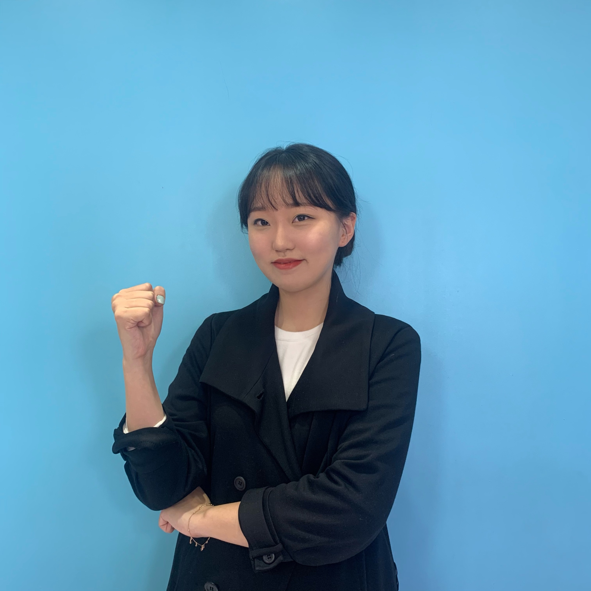
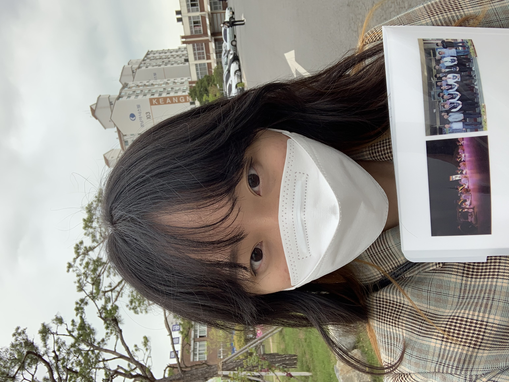

1. 성장과정
|
저는 중학교를 졸업할 때까지, 소극적이고 말없는 모습의 학생이었습니다. 하지만 이랬던 제가 고등학교에 입학하면서 조금씩 달라지기 시작했습니다. ‘내가 진정으로 하고 싶은 것이 무엇일까?’ 고민하면서 나의 주관, 꿈이 확실해지기 시작했고, 점점 꿈에 대해 확신이 생길수록 당당해지고 자신감이 생겼습니다. 저는 ‘프로그래머’라는 꿈을 가지게 되었고, 고등학교 생활을 하며 직접 프로그래밍 동아리를 만들고, 친구들과 함께 공부하면서 열정을 가지게 되었습니다. 이렇게 진로 결정은 저에게 변환점이 되어 이를 계기로 적극적이고, 자신감이 넘치는 학생이 되었습니다. 그리고 저는 진로에 적합한 학과에 입학하여 공부를 시작했습니다. 지금까지 너무 해보고 싶었던 공부를 하는 것에 대해 희열을 느껴 행복하게 1학년 생활을 보냈고, 2학년이 되기 전 저에게 교직이수라는 기회가 찾아왔습니다. |  |
|  |
교사가 된다는 생각을 한 번도 가진 적은 없지만, ‘어쩌면 이것도 나에게 잘 맞을 수 있지 않을까?’라는 생각이 들었습니다. 처음에는 교직에 대해 두려움을 느껴 교직 수업을 일찍부터 듣지 않았지만, 처음으로 교직 수업을 듣게 되고 나서 생각하지도 못했던 재미를 느꼈습니다. 교직 수업은 저의 부족한 점을 깨우쳐 주었고, 저를 성장할 수 있게 하는 수업이라는 것을 느꼈습니다. 이때 저는 또다시 저에게 변환점이 찾아왔다고 생각이 들었습니다. 이후 저의 꿈은 컴퓨터, 정보 교사가 되었고, 아직까지는 변함이 없습니다. 저에게 흥미를 얻고, 진로를 고민한다는 것은 변환점이 되어 저를 더 멋지고 강한 사람으로 만들어주는 것 같다는 생각이 듭니다. 앞으로도 꿈이 멈추지 않고 계속 되었으면 좋겠습니다. |